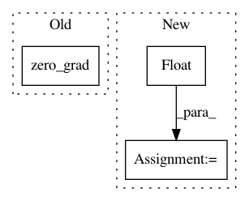

4d68a1e4435dfeb5884093aa91a33e1b34a909cc,ml/rl/training/_dqn_trainer.py,_DQNTrainer,train,#_DQNTrainer#Any#,65
Before Change
// get reward estimates
reward_estimates = self.reward_network(current_state).q_values
reward_loss = F.mse_loss(reward_estimates, rewards)
self.reward_network_optimizer.zero_grad()
reward_loss.backward()
self.reward_network_optimizer.step()
self.loss_reporter.report(
After Change
self.minibatch += 1
rewards = boosted_rewards
discount_tensor = torch.full_like(rewards, self.gamma)
not_done_mask = learning_input.not_terminal.float()
if self.use_seq_num_diff_as_time_diff:
// TODO: Implement this in another diff
logger.warning(
"_dqn_trainer has not implemented use_seq_num_diff_as_time_diff feature"
)
pass
all_next_q_values, all_next_q_values_target = self.get_detached_q_values(
learning_input.next_state
)
if self.maxq_learning:
// Compute max a" Q(s", a") over all possible actions using target network
next_q_values, max_q_action_idxs = self.get_max_q_values_with_target(
all_next_q_values,
all_next_q_values_target,
learning_input.possible_next_actions_mask.float(),
)
else:
// SARSA
next_q_values, max_q_action_idxs = self.get_max_q_values_with_target(
all_next_q_values, all_next_q_values_target, learning_input.next_action
)
filtered_next_q_vals = next_q_values * not_done_mask
if self.minibatch < self.reward_burnin:
target_q_values = rewards
else:
target_q_values = rewards + (discount_tensor * filtered_next_q_vals)
// Get Q-value of action taken
current_state = rlt.StateInput(state=learning_input.state)
all_q_values = self.q_network(current_state).q_values
self.all_action_scores = all_q_values.detach()
q_values = torch.sum(all_q_values * learning_input.action, 1, keepdim=True)
loss = self.q_network_loss(q_values, target_q_values)
self.loss = loss.detach()
self.q_network_optimizer.zero_grad()
loss.backward()
if self.gradient_handler:
self.gradient_handler(self.q_network.parameters())
self.q_network_optimizer.step()
if self.minibatch < self.reward_burnin:
// Reward burnin: force target network
self._soft_update(self.q_network, self.q_network_target, 1.0)
else:
// Use the soft update rule to update target network
self._soft_update(self.q_network, self.q_network_target, self.tau)
logged_action_idxs = learning_input.action.argmax(dim=1, keepdim=True)
reward_loss, model_rewards, model_propensities = self.calculate_cpes(
training_batch,
current_state,
logged_action_idxs,
max_q_action_idxs,
discount_tensor,
not_done_mask,
)
self.loss_reporter.report(
td_loss=self.loss,
reward_loss=reward_loss,
In pattern: SUPERPATTERN
Frequency: 3
Non-data size: 3
Instances
Project Name: facebookresearch/Horizon
Commit Name: 4d68a1e4435dfeb5884093aa91a33e1b34a909cc
Time: 2019-02-13
Author: kittipat@fb.com
File Name: ml/rl/training/_dqn_trainer.py
Class Name: _DQNTrainer
Method Name: train
Project Name: pytorch/fairseq
Commit Name: 5028ed1b6bedd526dee27ea731284f43e87303f0
Time: 2020-03-11
Author: myleott@fb.com
File Name: fairseq/trainer.py
Class Name: Trainer
Method Name: train_step
Project Name: facebookresearch/Horizon
Commit Name: 69061e67d62a067c2a8a5c6a440f7b9605c111d6
Time: 2020-08-28
Author: badri@fb.com
File Name: reagent/training/reinforce.py
Class Name: Reinforce
Method Name: train